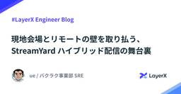

LayerX エンジニアブログ
https://tech.layerx.co.jp/
LayerX の エンジニアブログです。
フィード

現地会場とリモートの壁を取り払う、StreamYard ハイブリッド配信の舞台裏 #aicoding 1
1
LayerX エンジニアブログ
バクラク事業部 Platform Engineering 部 SRE グループの uehara です。 先日 LayerX では AI Coding Meetup #2 を開催し、現地会場・オンライン配信ともに多くの方にご参加いただきました。ご参加いただいた皆さんありがとうございました。 ハイブリッドイベントでは、参加者が場所を選ばないというメリットがある一方で、配信特有の難しさも伴います。この記事では、AI Coding Meetup #2 で実践した配信の舞台裏について紹介します。 当日のレポートや動画も公開されていますのでぜひ併せてご覧ください。 tech.layerx.co.jp ww…
1日前

SRE NEXT 2025にSILVERスポンサーとして協賛しました！ #srenext
LayerX エンジニアブログ
こんにちは！バクラク事業部Platform Engineering部SREグループのtaddy( id:sadayoshi_tada )です。 LayerXはSRE NEXT 2025にSILVERスポンサーとして協賛させていただきました。この記事では2日間にわたるイベント期間中のブースの様子や私が感じた、カンファレンス全体の様子をレポートします。 tech.layerx.co.jp LayerXのブース紹介 聴講したセッションの感想 ARR150億円、エンジニア140名、27チーム、17プロダクトから始めるSLO Pullリクエストは証拠、Pull型Appが実行、DeviceFlowで認証：…
9日前
Forward Deployed Engineerの募集を開始しました
LayerX エンジニアブログ
こんにちは！LayerX AI・LLM事業部でマネージャーを務めていますエンジニアの恩田（さいぺ）です。 AI・LLM事業部では今回、新たにForward Deployed Engineerというポジションの募集を開始しました。 今回はこのFDEというポジションの紹介や募集の背景を書かせていただきます。 Forward Deployed Engineer（FDE）とは 日本ではあまり馴染みがない職種かもしれませんが、前線（Forward）に配置された（Deployed）ということで、お客さまとの最前線に立ち、顧客課題を真に理解し、プロダクトの実装・導入を推進するエンジニアを指します。Layer…
10日前
Developer eXperience AWARD 2025で5位を受賞しました
LayerX エンジニアブログ
本日、一般社団法人日本CTO協会が主催する「Developer eXperience AWARD 2025」の結果が発表され、LayerXが5位にランクインしました。 これまでの2022年（15位）、2023年（15位）、2024年（11位）から着実に順位を向上させ、6つ順位を伸ばし5位となりました。 この受賞は、LayerXの開発組織全体が取り組んできた、お客さまへのさらなる価値提供を目的とする多角的なEnablingの取り組みや、技術コミュニティへの継続的な貢献が評価されたものと考えています。 行動指針に紐づくアクション LayerXは「すべての経済活動を、デジタル化する。」というミッショ…
11日前
R&Dへのチャレンジ！AI・LLM事業部プロダクト開発体制updateFY25Q2
LayerX エンジニアブログ
LayerXのAI・LLM事業部で事業部CPO 兼 プロダクト部の部長をしている小林(@nekokak)です。 2025年4月1日から事業部内の体制が変わりましたとご紹介しましたが、早いものでFirst Quarterが終わりました。心強い仲間が増えたこと、取り組みの幅が広がったことによりこの7月からちょっとだけ組織を変えましたので、今日はその変更点ご紹介と、組織づくりをしていく上で大切にしていることを紹介してみます。 https://tech.layerx.co.jp/entry/2025/04/03/154128 FY25Q2からのAI・LLM事業部 プロダクト部の体制について 7月1日か…
16日前
生成AIカンファレンス2025にゴールドスポンサーとして協賛します #gen_ai_conf
LayerX エンジニアブログ
こんにちは！すべての経済活動を、デジタル化したいCTO室の @serima です。 LayerXは2025年7月11日（金）に東京大学伊藤謝恩ホールで開催される「生成AIカンファレンス2025」にゴールドスポンサーとして協賛します！ 生成AIカンファレンス2025について 生成AIカンファレンス2025は、日本最大級の生成AIイベントとして、最新の生成AI技術とそのビジネス活用に焦点を当てた専門カンファレンスです。AI技術の最前線で活躍する研究者、開発者、企業が一堂に会し、生成AIの現在と未来について深い議論を行う貴重な機会となっています。 gen-ai-conf.org 協賛の背景 Laye…
16日前
自分の所属する会社が AWS Summit Japan の基調講演に出演するのを見るのはめっちゃ楽しかった
LayerX エンジニアブログ
バクラク事業部 PlatformEngineering 部 SRE グループマネージャー 兼 コーポレートエンジニアリング室長 兼 執行役員 CISO の @kani_b です。 タイトルがほぼ感想ですが、6月25日~26日に開催された AWS Summit Japan 2025 において、 LayerX は基調講演・事例セッション・ブース展示のそれぞれで登壇・発表をさせていただきました。 7/11 (金)、 つまり明日までオンデマンドで配信されているようですので、参加されていない方はぜひ映像もご覧ください。 私自身、社会人になった2013年からほぼ毎年 AWS Summit Japan (T…
16日前
49人による7日連続ランチタイムLTと、LayerX初のAIカンファレンス「Bet AI Day」 #BetAIDay #7DaysLT
LayerX エンジニアブログ
すべての経済活動を、デジタル化したい @makoga です。 この夏、LayerXは、AIと向き合う皆さまと未来を共創する対話の起点としたく、AIカンファレンスを開催します。 このカンファレンスは、8/1(金)の「Bet AI Day」と、Countdown Eventである「7Days LT」による二段構えのイベントとなっております。 この記事では、その全貌と、私たちが伝えたい思いをご紹介します。 【第一弾: Countdown Event】49人のリアルな声、「7Days LT」でAI活用の最前線へ！ 「7日間 x 7人 = 49人のLT」。これはLayerXのAIへの熱量の証です。 8/…
16日前
クラウドなネットワークの学び方2025
LayerX エンジニアブログ
こんにちは。LayerX AI・LLM事業部 SREの@shinyorke（しんよーく）と申します。 最近は個人開発で作っている「生成AIによる野球データ分析」がだいぶ進捗して嬉しいです。 詳細は7/29（火）LayerX ランチタイムLT「AI for fun」でお披露目しますのでご興味あるかたはぜひ！*1 layerx.connpass.com ここから先、本題の話となります。 本記事では、多くの方が苦しむであろう（私もかつて苦しんでいました）、 クラウドネイティブな環境におけるネットワーク設計・構築 について、SREとしての実践的な学び方を紹介します。 特に、エンタープライズ企業でのシス…
18日前
金融現場から求められるガバナンスと生産性を両立する、属性ベースアクセス制御（ABAC）への挑戦
LayerX エンジニアブログ
LayerX Fintech事業部から三井物産デジタル・アセットマネジメント（以下、MDM）に出向しているs.masです。 本記事では現在構築を進めている「属性ベースアクセス制御（ABAC）」の考え方についてご紹介します。 「なぜABACが必要だと考えたのか」「どのような構想を描いているのか」「どう進めようとしているのか」という、構想段階のリアルな思考プロセスを共有するものです。 MDMにおける従来のグループメンバー管理 現在、ID基盤としてMicrosoft Entra IDを利用し、SCIMによる自動プロビジョニングで各種SaaS（Google Workspace、Slack、Notion…
18日前
開発生産性カンファレンス2025にゴールドスポンサーとして協賛します & 1名登壇します #開発生産性con_findy
LayerX エンジニアブログ
こんにちは！すべての経済活動を、デジタル化したいCTO室の @serima です。 LayerXは2025/07/03から開催される開発生産性Conference 2025にゴールドスポンサーとして協賛し、ブース出展を行います。また、バクラク事業 CTO 中川がスポンサーセッション枠で登壇します！ dev-productivity-con.findy-code.io 登壇内容について LayerXからはバクラク事業 CTO 中川 (@yyoshiki41) が「AIエージェントが変える開発組織のEnabling」というタイトルで登壇します。 概要 生成AIの進化により、開発組織のあり方は大きく…
24日前
スタートアップ開発者が知って得するエンタープライズ向けアプリケーションの開発Tips
LayerX エンジニアブログ
こんにちは、LayerX AI・LLM事業部の篠塚(@shinofumijp)です。エンジニアリングマネージャーとして生成AIプラットフォーム「Ai Workforce」の開発に携わっております。 Ai Workforce はすでにエンタープライズのお客様の実業務で稼働しており、「企業と成長を共にする AI プラットフォーム」を掲げて日々改善を続けています。 エンタープライズ環境でプロダクトを提供するには、それ相応の運用水準を満たすことが不可欠です。 「セキュリティや運用は Ops チームに任せ、Dev は機能開発に専念」という分業だけでは立ち行かず、DevとOpsが初期フェーズから協調するD…
25日前
データ基盤なAWS SecurityLakeに対するSIEMクエリエンジンをDuckDBにするとサクサクで楽しい話
LayerX エンジニアブログ
ドーモ、読者のミナ=サン、LayerX Fintech事業部（三井物産デジタル・アセットマネジメント（MDM）に出向）で、@ken5scalです。 久しぶりのAmazon SecurityLakeとログ系のブログです。セキュリティにおいても、紀元前よりサーバー、ネットワーク機器、アプリケーションなどから出力されるログを一元的に収集し、監視や分析を行うことで、インシデントの早期発見や対応が可能になることはよく知られています。その代表的なソリューションが、そう、皆様よくご存じのSIEMです。 当社では、従来のSIEM（DataDog SIEM）に加え、データエンジニアリング的なアプローチにチャレン…
25日前
【QAチームの知を結集！】読書会でスキルアップとチーム力向上を実現しよう
LayerX エンジニアブログ
LayerX バクラク事業部で債務管理プロダクトを担当しているQAエンジニアの hashi です！ QAに関するスキルアップってどうしてますか？今回は、私たちのQAチームが日頃から取り組んでいる「読書会」についてご紹介したいと思います。 読書会を通じて、テスト全体の設計や自動テストについて多くの学びがありました。特に自動テストに関しては、チーム全体で知識レベルを合わせることができ、実務への応用がスムーズになりました。JaSSTで発表した内容も、こうした読書会での学びが基盤となっているのでこちらもご覧ください！またバクラク申請・経費精算のdeltaさんもSWEの読書会について記事を書いているので…
1ヶ月前
SRE NEXT 2025にSILVERスポンサーとして協賛します #srenext
LayerX エンジニアブログ
こんにちは！バクラク事業部Platform Engineering部SREグループのtaddy( id:sadayoshi_tada )です。 LayerXは2025/07/11(金)から開催されるSRE NEXT 2025にSILVERスポンサーとして協賛します。 sre-next.dev SRE NEXT とは 協賛の背景 ブースでは「実際のADR」や構成図をお見せします！ 個人的に楽しみにしているセッションについて Fast by Friday: Making performance analysis fast and easy ABEMA の本番環境負荷試験への挑戦 Pullリクエスト…
1ヶ月前
Looker StudioからSnowflakeのデータを取得するアドオン開発について
LayerX エンジニアブログ
こんにちは！バクラク事業部 機械学習・データ部 データチームの @TrsNium です。 昨年、Google SheetsからSnowflakeに接続するためのアドオンをGoogle Apps Script（GAS）で自作し、ブログ記事として公開しました。今回はLooker StudioからSnowflakeへ直接接続し、任意のクエリを安全に実行・可視化できるコミュニティコネクタを開発しました。本記事では、開発背景、システム構成、認証設計、実装の工夫、そして運用面での知見について詳しくご紹介します！ 1. 背景とコミュニティコネクタ開発のモチベーション バクラク事業部では、以前は Google…
1ヶ月前
LLMで長い出力を扱うときに、知っておくとちょっと楽になること
LayerX エンジニアブログ
こんにちは。AI・LLM事業部 LLMグループ エンジニアのkoseiです。 AI・LLM事業部ではエンタープライズのお客様向けの文書処理業務を効率化するプロダクト「Ai Workforce」を開発・提供しています。詳細は以下のリンクをご参考ください。getaiworkforce.com 直近も大手リース会社のお客さまにご導入いただきました。「Ai Workforce」が実際どのように利用されているのか、ご興味のある方は是非ご覧ください。 getaiworkforce.com さて、LLMを用いたアプリケーションを開発していると、LLMの出力が長いタスクって意外と遭遇しますよね。長文の要約、大…
1ヶ月前
技術カンファレンスに出すプロポーザルを書く
LayerX エンジニアブログ
バクラクビジネスカード開発チームのTech Leadの @budougumi0617 です。今回はプロポーザルを書く時に私が気をつけていることを紹介します。 大きいカンファレンスで登壇するためには、CfP（Call for PapersもしくはCall for Proposals）にプロポーザルを応募して採択してもらう必要があります。 人気のカンファレンスでは採択倍率が二桁になることもあります。 私は過去Go Conferenceで3回、PHPerKaigiで1回プロポーザルが採択された経験があります。また、Go Conference運営として数回プロポーザルを審査する立場になった経験1もあり…
1ヶ月前
Playwrightの自動待機（Auto-waiting）を使いこなし、保守性の高いテストコードを書こう
LayerX エンジニアブログ
こんにちは、LayerX バクラク事業部で勤怠プロダクトを担当しているQAエンジニアの matsu です！ Playwrightで書いたE2Eテストが「時々失敗する」「手元では動くのにCIだと落ちる」といった経験はありませんか？ その不安定なテスト（Flaky Test）の原因、テストの「待ち方」にあるかもしれません。 私たちのチームでも最近、このFlakyなテストに悩まされることが増え、調査を進める中でPlaywrightの待機処理に関する知見が溜まってきました。 そこでこの記事では、Playwrightの「自動待機」の仕組みを正しく理解し、明示的な待機をどう使っていくか、私たちが実践してい…
1ヶ月前
Horizontal AI SaaSにおける精度評価基盤づくり
LayerX エンジニアブログ
こんにちは。LayerX AI・LLM事業部でAi Workforceのプロダクトマネージャーを務めている稲生です。 Ai Workforce は、社内外に散在するドキュメントを活用し、抽出・分類・要約・生成などのタスクを自動化できる 横断型（Horizontal）AI プラットフォーム SaaS です。 今回は、最近力を入れているAi Workforceにおける 「精度評価」 の取り組みをご紹介します。 なぜ精度評価なのか LLMを利用するプロダクトにおいて、その精度はとても重要です。 LLMの進化は加速中 OpenAIをはじめ、各社が次々と高性能なモデルを公開し、誰でも高精度な出力を得られ…
1ヶ月前
AI Coding Meetup #2 を開催しました #aicoding
LayerX エンジニアブログ
こんにちは。バクラク事業部エンジニアの omori (@onsd_) です。 2025年6月12日、「AI Coding Meetup #2」を「Cline / Roo Code / Claude Code の活用事例」をテーマにオンライン・オフラインのハイブリッド形式で開催しました。 この記事では、イベントレポートとして発表内容やパネルディスカッションについてご紹介します。 layerx.connpass.com AI Coding Meetup とは？ AI Codingツールの個人利用は急速に広がっていますが、それを一歩進めたチームや組織での実践的な導入・活用となると、その知見はまだ十分…
1ヶ月前
みんなで読めば怖くない！今日から始める読書会
LayerX エンジニアブログ
バクラク申請・経費精算でエンジニアをしています三角 (@delta) です。 「これは面白そう！」と思って買った本が意外と難しく、気づけば読むことなく本棚の肥やしに…。一度はそんな経験があるのではないでしょうか。私もその一人です。 そんな方におすすめなのが読書会です。読書会を通じて自分が本の中の知識を得ることはもちろん、交流を深めること、組織のレベルアップもできます。たくさん嬉しいですね。 この記事では、私がよくやっている読書会のやり方を紹介します。 ※記事中で扱っている内容はあくまで私が過去に参加/主催した読書会の内容も含めて総括的に書いたもので、全てが LayerX 社内で取り組んだ内容だ…
1ヶ月前
Connect を HTTP/1.1 + JSON API として使う！Salesforce 連携 API の実装事例
LayerX エンジニアブログ
こんにちは！バクラク事業部 PlatformEngineering 部の @hira です！ 今回は社内オペレーションを自動化するため Connect を利用して Salesforce 連携用の API を作ったので、事例として紹介したいと思います。 そもそも Connect ってなに？ Connect は Protocol Buffers ベースの RPC ライブラリで、 gRPC や gRPC-Web 、独自のプロトコルをサポートしています。 特に独自の Connect プロトコルによって HTTP/1.1 でも動作し、JSON でやり取りできるため、HTTP クライアントがあれば通信でき…
1ヶ月前
FlutterNinjas 2025参加レポート
LayerX エンジニアブログ
LayerXのFintech事業部（三井物産デジタル・アセットマネジメント（MDM）に出向中）に所属しています、ソフトウェアエンジニアの id:kikuchy です。最近ようやく自室にエアコンを導入しました。今年は熱中症対策バッチリです。 さて、先日FlutterNinjas 2025というイベントが開催されたので、参加してきました。 flutterninjas.dev 日本と海外のFlutterエンジニアの架け橋になることを目的とした、主に日本国内の英語話者をターゲットとしたグローバルなFlutterカンファレンスです。 セッションは全編英語で、登壇者のほとんどが日本国外からいらしたエンジニ…
1ヶ月前
Aurora MySQLログの収集と分析基盤の紹介
LayerX エンジニアブログ
こんにちは！バクラク事業部 Platform Engineering部 SREグループの taddy(id:sadayoshi_tada)です。 みなさんはデータベースサーバのログの分析が必要になった時どのように対処されていますか？バクラクではAmazon Aurora MySQL互換(以降Auroraと呼称します)を使用していて、Aurora内部に保持しているログを収集し、分析する基盤を運用しているためこの記事でその紹介をします。 Aurora内部に保持しているログの出力 Auroraのログダウンロードのための手段検討 AuroraのログダウンロードとS3アップロードの概要 実行基盤の選定 …
1ヶ月前
クラウドストラテジーの入門と実践
LayerX エンジニアブログ
こんにちは。LayerX AI・LLM事業部 SREの@shinyorke（しんよーく）と申します。 私はよく書籍を読むエンジニア*1なのですが、SREやクラウドなエンジニアにはクラウドストラテジーという書籍をオススメしています。 leanpub.com 名前の通り「クラウドを使う組織・人にとっての戦略の話」メインの書籍ですが、弊社LayerXのようにSaaSそして生成AIプロダクトを提供する企業のエンジニアにとっても非常に学びがたくさんあります。 特にAI・LLM事業部では主力プロダクトである「Ai Workforce」を大企業のお客様に導入していただいている関係上、 エンタープライズ企業向…
1ヶ月前
今年も現地参加して良かった！Snowflake Summit 2025！
LayerX エンジニアブログ
こんにちは。バクラク事業部 Platform Engineering部 データグループの@civitaspoです。2025年6月2日から5日にかけてサンフランシスコで開催されたSnowflake Summit 2025に現地参加してきました。本記事では、その様子や感想をレポートしようと思います。
2ヶ月前
既存サービスからお客様影響なしで機能を分離するための段階的マイグレーション戦略について
LayerX エンジニアブログ
はじめに こんにちは、バクラクのソフトウェアエンジニアをしている id:wataru_lx です。 バクラクシリーズでは今回運用中の複数のプロダクトでお客様の銀行口座の情報を活用する必要があり、それらの共通基盤として複数のバクラクプロダクトをまたいでお客様の銀行口座の情報を一元管理する口座管理サービスを新たに設計・実装しました。 この記事では、既存のプロダクトから一部の機能を再利用可能な形で分離し、新しいサービスとして実装するまでの過程と、その際に考慮した設計ポイントについて紹介します。 背景と課題 口座アグリゲーションサービスとは 口座アグリゲーションサービスとは、複数の金融機関の口座情報を…
2ヶ月前
Fintech事業部の0→1から1→10の変化・取り組み・挑戦
LayerX エンジニアブログ
こんにちは！Fintech事業部でVPoEをしています @takochuu です。 最近車を買ったのでドライブして地方グルメを楽しんでいます。 以前、以下のような記事を書いたのですがここから状況が変わり、0→1から1→10のフェーズへの転換期がFintech事業部にやってきたので、筆を取ってみようと思います。 tech.layerx.co.jp LayerX Fintech事業部はこれまで三井物産デジタル・アセットマネジメント(以下MDM)に出向し「Operation DX」と呼ばれるアナログ業務のデジタル化を行うことと、個人向け資産運用サービス「ALTERNA（オルタナ）」の開発を行っていま…
2ヶ月前
AI活用を加速するバクラクカード：Claude Max導入の舞台裏
LayerX エンジニアブログ
こんにちは、すべての経済活動をデジタル化したい、@serima です。 先日、CTOの松本（@y_matsuwitter）がエンジニアチームの希望者向けにClaude Maxのアカウント提供を決定し、その内容をポストしたところ、大きな反響がありました。 claude 4 + claude codeが良く出来ていると思い、エンジニアチームの希望者に対してClaude MAXのアカウントを用意することにしました。私も日々使ってるし、社内で既に使っている人は1日で$200分くらい使っており生産性的にも良さそうな印象。— 松本 勇気 (Yuki Matsumoto) | LayerX CTO (@y_…
2ヶ月前